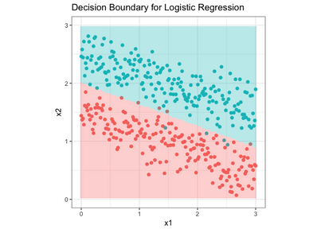
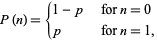
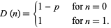
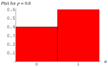
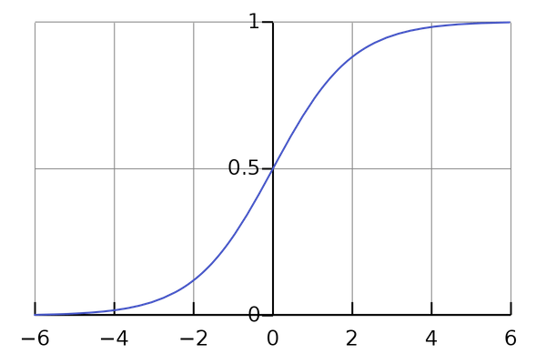
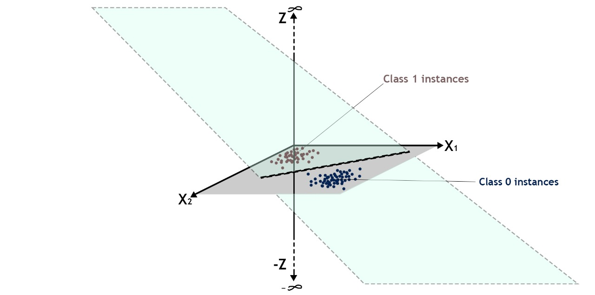
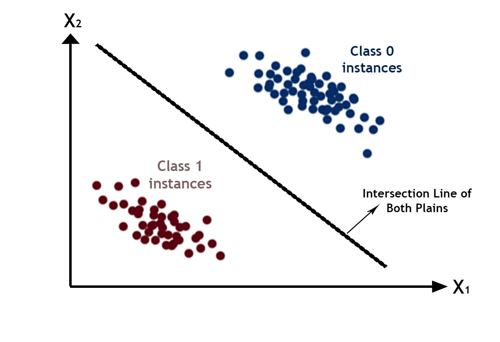

Logistic Regression¶
Introduction¶
Let us now look at a classification algorithm we have already seen KNN, in this section we will look at another classification algorithm called Logistic Regression.
Logistic Regression is used when the dependent variable(target) is categorical and the independent variables are continuous.
For example,
To predict whether an email is spam (1) or not spam(0)
Whether the tumor is malignant (1) or not(0)
In logistic regression we try to make a decision boundary seprating the two classes. In case where there is two features a line will be representing the decision boundary. And for increase in the dimension of data, decision boundary’s dimension will also increase. following diagram helpls us to visualize the following-

As can been easily seen above the decision boundary is line until now we know that linear models can be used to make a straight line for the data.But observing carefully it can be understood that in linear regression line was drawn to suit the data most here we need to divide in two parts.As told in linear regression model the line is made to suit data by using it’s loss function so a new loss function will help us to do the required.
But,before that we we have one more problem in using the linear model, which is that in linear model our \(Y_{true}\) was following a Normal distribution and was continuous therefore prediction was also continuous in case of linear regression. Here the \(Y_{true}\) and \(Y_{pred}\) both will be discrete values i.e. eiether 0 or 1 symbolizing any one of the given class.
To overcome this problem we have recently studied about Generalized Linear model which we can use to apply linear model on any distribution and the Link function derived from it will give us the final prediction.Therefore to use GLM we have to know the distribution of the data’s prediction In case of binary classification it follows bernoulli distribution.
Bernoulli distribution¶
The Bernoulli distribution is a discrete distribution having two possible outcomes labelled by n=0 and n=1 in which n=1 (“success”) occurs with probability p and n=0 (“failure”) occurs with probability q=1-p, where 0<p<1. It therefore has probability density function

which can also be written
\(\large{P(n)=p^n \times (1-p)^{(1-n)}}\).
The corresponding distribution function is-

Bernoulli distribution can be represented on graph something like this-

You can read more about bernoulli distribution from here - ( https://en.wikipedia.org/wiki/Bernoulli_distribution )
Now let’s calculate the Expected value of \(Y\), Y here represents the class to which corresponding data will belong as Y belongs to a bernoullli distribution and possible value of Y can be 0 or 1.
Therefore,
\(\normalsize{E[Y]=probability(Y=0)\times0+probability(y=1)\times1}\)
using the constrainsts of bernoulli distribution where
\(\normalsize{Probability(Y=1)=p}\) and,
\(\normalsize{Probability(Y=0)=1-p}\)
\(\normalsize{E[Y]=(1-p)\times0+p\times1}\)
\(\normalsize{\therefore E[Y]=p}\)
Now as now we have understood the need of GLM in case of Logistic regression and derived some expression we also need to consider that will a bernoulli distribution work in for GLM or not in other sense will a linear model can be used in case of bernoulli distribution.
Generalized linear model¶
To proof that a GLM will work on a given probability function we have to show that given probability distribution belongs to a exponential family and can be written in terms of general equation of GLM.
Equation of bernoulli distrinution-
\(\large{P(y)=p^y\times(1-p)^{(1-y)}}\).
Taking log on both the sides-
\(\normalsize{\log(P(Y))=\log(p^Y\times(1-p)^{(1-Y)})}\)
Using the property of log-
\(\normalsize\log({P(Y))=Y\times\log(p)+(1-Y)\times\log(1-p)}\)
Taking Anti-log on both sides-
\(\normalsize{P(Y)=e^{\large{Y\times\log(p)+(1-Y)\times\log(1-p)}}}\)
As, above equation shows bernoulli distribution belongs to exponential family thus now we can use GLM on it in order to use a linear model in case of a bernoulli distribution.
Now comparing the above derived equation of bernoulli distribution with General eqution that we studied in GLM section prevoisly.
\(\normalsize{P(Y)=b(Y)\times^{\Large{\eta*T(Y)-a(\eta)}}}\)
\(\normalsize{P(Y)=e^{\large{Y\times\log(p)+(1-Y)\times\log(1-p)}}}\)
After comparing we can see that-
\(1. \large{b(Y)=1}\)
\(2. \large{\eta=log(\Large{\frac{p}{1-p})}}\)
\(3. \large{T(Y)=Y}\)
\(4. \large{a(\eta)=-log(1-p)}\)
Which can also be written as
\(\large{a(\eta)=log(\Large{\frac{1}{1-p})}}\)
As discussed in GLM section that the Expected value of T(Y)is our final pridection-
\(E[T(Y)]\) is our prediction
As from observation we can see that \(\small{T(Y)=Y}\) Therefore,
\(E[Y]\) is our prediction
Previously in this section we derived that \(E[Y]=p\) thus \(p\) will be our final prediction.as \(p\) will be our final prediction now we have to state a relation between our final prediction and the value we will get by applying linear model.
As we know that the value given by the linear model will \(XW\) which is GLM is represented by term \(\eta\) as \(\eta\) is the prediction given by our linear model.
\(\eta=XW\)
Here we have to state a relation between value given by our linear model( \(\normalsize\eta\) ) and our final prediction (\(XW\)). from above observed operation we can find out that-
\({\eta=log({\dfrac{p}{1-p})}}\)
Taking Anti-Log-
\({e^\eta=\large{\frac{p}{1-p}}}\)
\({e^\eta\times(1-p)={{p}}}\)
\({e^\eta-e^\eta\times p=p}\)
\({e^\eta=p+e^\eta\times p}\)
\({e^\eta=p(1+e^\eta)}\)
\({p={\dfrac{e^\eta}{1+e^\eta}}}\)
Which than can be simplified and written as-
\({p={\dfrac{1}{1+e^{-\eta}}}}\)
subsituting the value of \(\eta-\)
\({p={\dfrac{1}{1+e^{-XW}}}}\)
As discussed \(p\) will be our final prediction therefore-
\(\therefore{Y_{pred}={\dfrac{1}{1+e^{-XW}}}}\)
The above expression is called Cannonical Responce Function. and is commonly given name is Sigmoid function.
Sigmoid Function¶
A sigmoid function is a mathematical function having a characteristic “S”-shaped curve or sigmoid curve.A sigmoid function is a bounded, differentiable, real function that is defined for all real input values and has a non-negative derivative at each point and exactly one inflection point. A sigmoid “function” and a sigmoid “curve” refer to the same object.
A common example of a sigmoid function is the logistic function shown in the first figure and defined by the formula:
\({\displaystyle S(x)={\frac {1}{1+e^{-x}}}={\frac {e^{x}}{e^{x}+1}}=1-S(-x).}{\displaystyle S(x)={\frac {1}{1+e^{-x}}}={\frac {e^{x}}{e^{x}+1}}=1-S(-x).}\)
Other standard sigmoid functions are given in the Examples section. In some fields, most notably in the context of artificial neural networks, the term “sigmoid function” is used as an alias for the logistic function.

Observations¶
Looking closely you will observe that the range of this function is between [0,1] for any value of the input and it is exactly what we want for any value predicted by our linear model we will get value between after passing it to the sigmoid function. and then we can set a threshold to identify the class.
You can read more about sigmoid function from here-( https://en.wikipedia.org/wiki/Sigmoid_function )
Visualizing Decision Boundary¶
As now we have both our final prediction function and our linear model ready before setting up the parameters of linear model. Let’s just try to analyse how the two classes will get seperated.
We know that
\(P(Y)=\normalsize{p^Y\times(1-p)^{(1-Y)}}\)
For Y=0
\(P(Y)=\normalsize{(1-p)}\)
For Y=1
\(P(Y)=\normalsize p\)
As we have seen in MLE to maximize the likelihood we have to maximize it’s probability function Therfore,
For Y=0 we have to maximize \(\normalsize{(1-p)}\) or in other words minimize \(\normalsize p\)
For Y=1 we have to maximize \(\normalsize p\).
As discussed above \(\normalsize{p={\frac{1}{1+e^{-XW}}}}\) for the sake of simplicity let us represent the term \(XW\) with term \(\large z\)
For Y=0 we have to minimize \(p\) which means minimizing \(\large{\frac{1}{1+e^{-z}}}\) or maximizing the term \(\large{{1+e^{-z}}}\) which simply translates to maxmizing the term \(\large{e^{-z}}\).
For Y=1 we have maximize \(p\) which means maximizing \(\large{\frac{1}{1+e^{-z}}}\) or minimizing the term \(\large{{1+e^{-z}}}\) which simply translates to minimizing the term \(\large{e^{-z}}\).
Observing carefully for both of the above results as e(Exponent) is constant thus will have no effect on either maximizing or minimizing the expression thus the minimum or maximum of the expression only depends on the term \(\normalsize z\). It can also be seen due to the negative sign in both of the expression that
For Y=0 we have to minimize \(\large z\)
For Y=1 we have to maximize \(\large z\)
As \(\large{z}=\small XW\) and it is the value that will come from a linear model thus will be continous so every point having Y=0 will try to minimize the value and every point having Y=1 will try to maximize the value. For a continous value minimum value is \(-\infty\) and maximum value is \(\infty\).
Therfore when plotting it, a 3d plot is required if number of independent variable is 2. 3rd dimension will have the \(\normalsize z\) plotted on it. also when the graph will get plotted signifying the value of \(\normalsize z\) for the two features.This plane is actually the decision boundary for the 2 dimensional data.
It can be visualised like in the diagrams given below-

Here you can see that points belonging to class 1 is pushing \(z\) to get the higher value which is \(\infty\) and points belonging to the class 0 is pushing \(z\) to get the lowest value which is \(-\infty\)
The line shown as the decision boundary earlier in this section is the intersection line between the decision boundary plane and the plane in which features lies. For higher dimensions(features) say n dimension, n+1 dimension decision boundary will get fitted on the data then it’s intersection with feature’s dimension can be visualized easily below is the decision line formed by the intersection of the decision surface and the palne of the features for n=2

Further Readings¶
You can read more about sigmoid function from here-( https://en.wikipedia.org/wiki/Sigmoid_function )